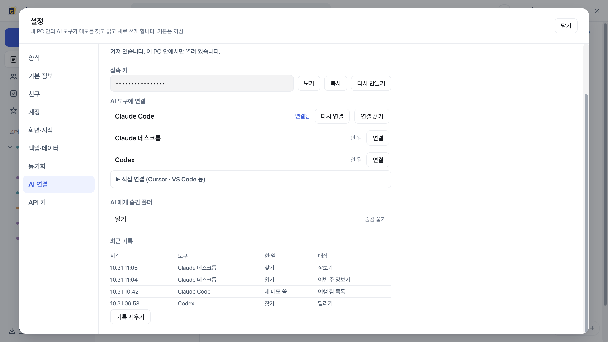
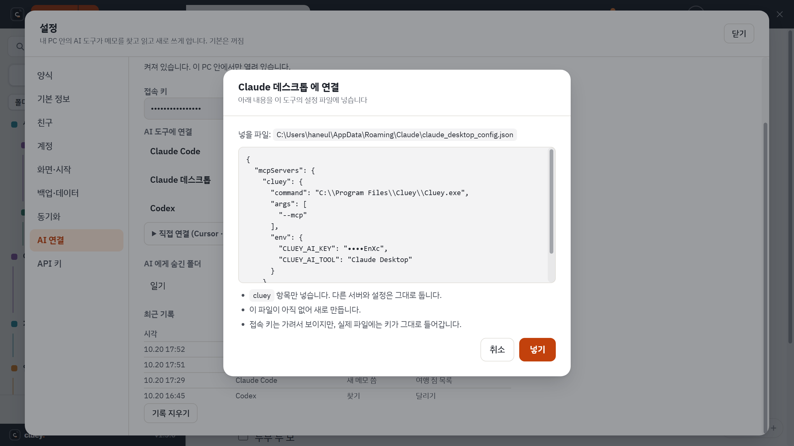
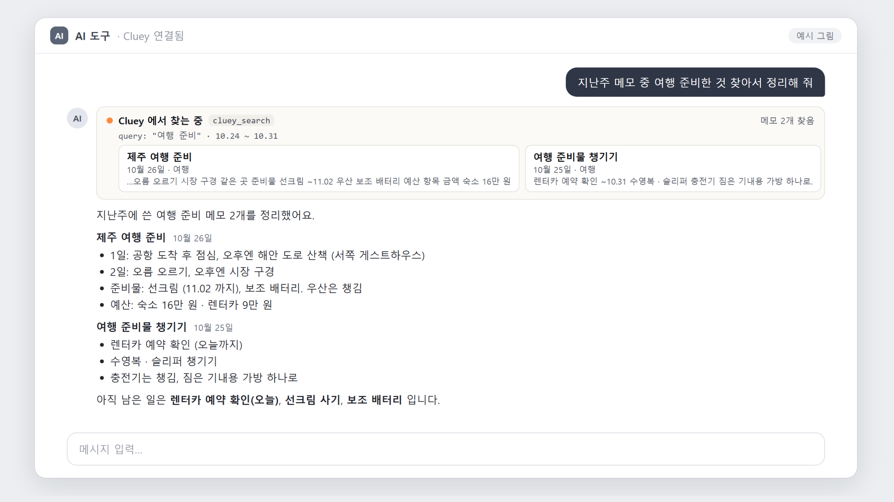

MCP 는 AI 도구가 다른 프로그램과 대화하는 공통 방식입니다. Cluey 를 연결하면 AI 에게 "지난주 회의 메모 정리해 줘" 같은 말을 할 수 있습니다. 로그인은 필요 없습니다.
AI 가 할 수 있는 일
| 이름 | 하는 일 |
|---|---|
| 폴더 목록 | 숨기지 않은 폴더를 보여 줍니다. |
| 메모 찾기 | 글자, 날짜, 폴더로 찾습니다. 제목, 앞부분, 날짜만 돌려줍니다. |
| 메모 읽기 | 본문 전체를 글자로 읽습니다. |
| 새 메모 | 제목, 본문, 폴더(선택)로 새 메모를 만듭니다. |
고치기와 지우기는 없습니다. 새 메모는 기본적으로 AI 메모 폴더에 들어가고(없으면 만듭니다), 목록에 "AI가 씀" 표시가 붙어 내가 쓴 메모와 구분됩니다.
연결하기
- Cluey 설정(톱니바퀴)의 AI 연결 탭을 엽니다. 처음엔 꺼져 있습니다. 스위치를 켜면 접속 키가 만들어집니다.
- AI 도구에 연결 목록에서 쓰는 도구(Claude Code, Claude 데스크톱, Codex) 옆의 연결 을 누릅니다.
- 어느 파일에 무엇을 넣는지 보여 주는 창이 뜹니다. 확인하고 넣기 를 누릅니다.
- 그 도구를 다시 시작합니다. (아래 표 참고)


| 도구 | Cluey 가 고치는 설정 파일 | 연결한 뒤 |
|---|---|---|
| Claude 데스크톱 | %APPDATA%\Claude\claude_desktop_config.json | Claude 앱을 완전히 끝냈다가 다시 켭니다. 창만 닫으면 적용되지 않습니다. 알림 영역(시계 옆)의 Claude 아이콘을 눌러 끝내기까지 합니다. |
| Claude Code | ~/.claude.json | Claude Code 를 다시 시작합니다. |
| Codex | ~/.codex/config.toml | Codex 를 다시 시작합니다. |
- 파일에는
cluey항목만 넣고 다른 서버와 설정은 그대로 둡니다. 원래 파일은 같은 폴더에.cluey-backup-날짜시각이름으로 복사해 둡니다. - PC 에 설치되어 있지 않은 도구는 "설치되어 있지 않음"으로 보이고 연결하지 않습니다.
- Cursor, VS Code 같은 다른 도구는 목록 아래에 붙여 넣을 설정이 나옵니다.
- 연결을 끊으려면 목록의 연결 끊기 를 누릅니다. 그 도구의 설정 파일에서 Cluey 항목만 지웁니다.
- 접속 키를 다시 만들면 이전 키는 바로 쓸 수 없습니다. 이미 연결한 도구는 다시 연결 을 눌러 주세요.
이렇게 물어보세요
연결한 AI 도구에서 평소처럼 말하면 됩니다. 처음 쓸 때 도구가 Cluey 를 써도 되는지 물어볼 수 있습니다.
- "Cluey 에서 지난주 회의 메모를 찾아서 결정 사항만 정리해 줘."
- "Cluey 의 '여행' 폴더에 있는 메모를 읽고 준비물 목록을 만들어 줘."
- "방금 정리한 내용을 Cluey 에 '주간 정리' 제목의 새 메모로 남겨 줘."
- "Cluey 에 10월에 쓴 견적 관련 메모가 있는지 찾아 줘."

안전하게 쓰기
- 내 PC 안에서만 열립니다. 인터넷으로 들어올 수 있는 주소가 아니고, 메모가 Cluey 밖으로 나가는 곳은 내가 연결한 AI 도구가 읽어 가는 부분뿐입니다.
- 잠근 메모는 어떤 경우에도 AI 에게 보이지 않습니다.
- 보이고 싶지 않은 폴더는 오른쪽 클릭의 AI에게 숨기기 로 뺍니다. 설정 화면에 숨긴 폴더 목록이 있습니다.
- 설정 화면에 최근 기록이 남습니다. 언제 어떤 도구가 찾고, 읽고, 새 메모를 썼는지 볼 수 있고 지울 수도 있습니다.
- Cluey 가 꺼져 있어도 AI 가 부르면 창 없이 알림 영역에만 켜져서 답합니다.
- 같은 PC 가 아닌 곳의 AI(웹의 Claude, ChatGPT 앱 등)는 이 방법으로 연결할 수 없습니다. 인터넷으로 가져가야 한다면 API 키를 씁니다.